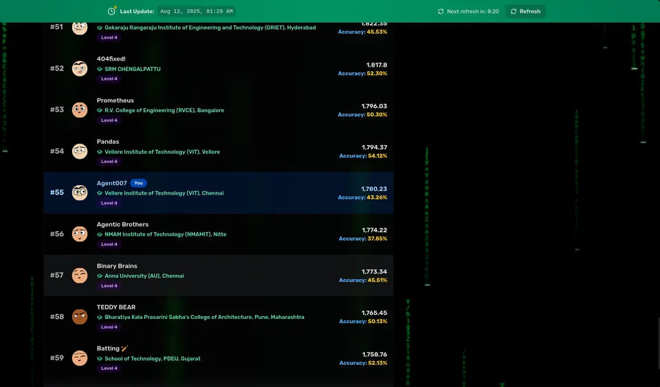

MISSION: AI pipelines // cloud backends // things that ship to prod
CS undergrad building real software - AI pipelines, cloud backends,
production sites for actual clients. Ground control is a shell prompt;
the desktop is Hyprland on Arch.
Education:B.Tech CSE @ VIT Chennai · BS Data Science @ IIT Madras (online)
Bio:
CS undergrad building real software - AI pipelines, cloud backends, production sites for actual clients.
I like things that run clean and ship to prod.
Working on cloud-native telecom software while gaining hands-on experience with enterprise software engineering, distributed systems, networking fundamentals, containerized applications, and CI/CD practices.
Contributing to internal development tasks and learning large-scale system design within Ericsson's engineering ecosystem.
MAY 2025 – AUG 2025
Cybersecurity Intern
@ C9Labs, Indore
Wrote Python and Bash scripts to automate security testing. Fixes went into CI/CD pipelines and Docker builds, not just a report that sits in someone's Drive.
Went through a serious training program - Linux and Windows hardening, network security, offensive fundamentals. Also built incident response simulations to make drills feel real.
SEP 2024 – PRESENT
Technical Team Member
@ Linux Club, VIT Chennai
Keep the club's Linux desktops running. Wrote setup scripts so it's not a manual process every time someone needs a new machine.
Run CTF workshops on pentesting, cryptography, and scripting. Some of the people I showed the ropes to now compete at other colleges.
Help plan semester events with the rest of the tech team - mostly logistics and making sure things actually happen on time.
Does quantum actually help RAG? Built a reproducible benchmark to find out - quantum feature maps (angle/amplitude/IQP) on PennyLane + Qiskit against a classical MiniLM + Qdrant + T5 baseline, over a 50+ source agricultural corpus scraped with Crawl4AI. The comparison harness runs the whole thing end to end.
Built for a real client. Travel platform with smooth scroll animations, offline support as a PWA, and fast load times. Learned the difference between building for yourself and building for someone who's paying.
Real-time chat over HTTP/3. Set up the whole stack myself - Cloudflare, S3, DNS, deployment. Wanted to understand what production infrastructure actually looks like from scratch.
Got tired of checking email manually. Built a pipeline on EC2 that reads Gmail, classifies everything with an LLM, and sends me a Telegram summary. No subscriptions, no SaaS, just a Docker container doing its thing.
rag_system.py

RAG Document Intelligence
PythonFastAPIVector DBDockerOCR
Document Q&A system - upload a PDF, ask questions, get answers with the relevant context pulled from the doc. Built it for a hackathon, ended up placing well at Bajaj Finserv.
Blockchain traceability for agriculture - farm-to-consumer records nobody can quietly edit, Chainlink oracles, virtual IoT monitoring, ML for quality and fraud detection. Team project; my part was the Next.js 14 + TypeScript frontend with role-based dashboards for farmers, distributors, retailers, and consumers, plus the integrations.
Hackathon project. Takes a PDF and turns it into something you can actually learn from - extracts the text, generates audio, lets you ask questions through a RAG pipeline. Got to AWSImpact Finalist at IIT Bombay.
My Linux setup, version controlled. GLSL shaders, automated workspace startup, clipboard sharing across contexts. Scripted the install so replicating it on a new machine doesn't take an afternoon.